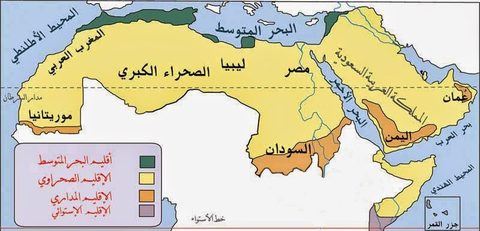
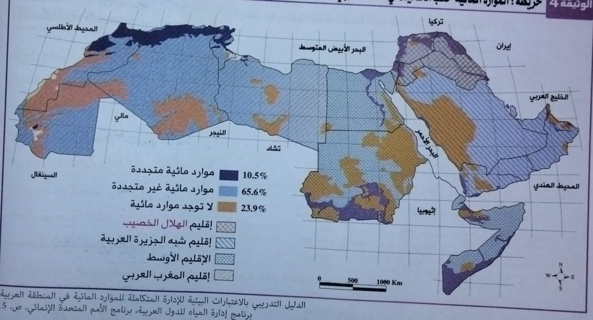
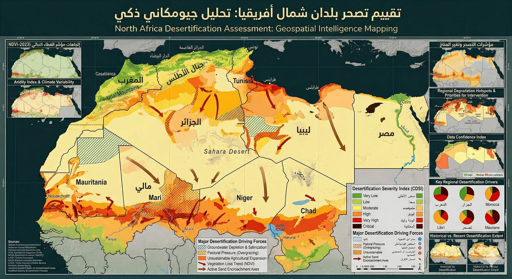
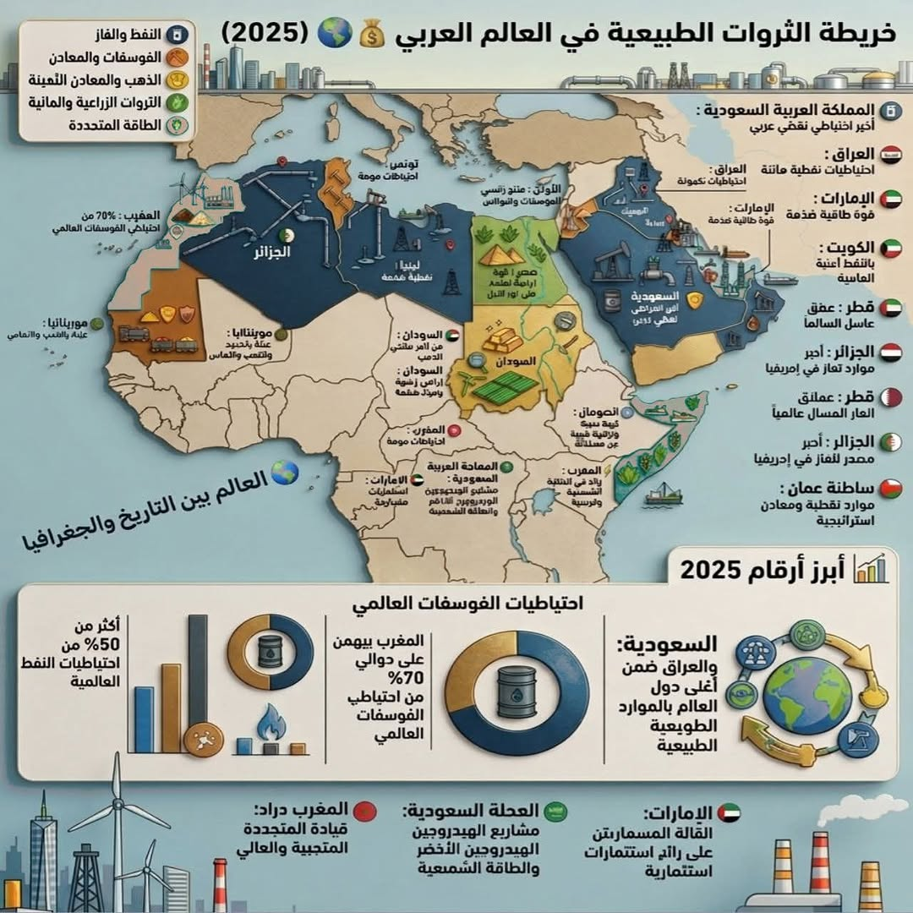

الوسط الطبيعي: المزايا والضغوطات
مقدمة
يتميز الوسط الطبيعي في العالم العربي بتباين كبير بين المجالات الصحراوية الشاسعة والمناطق الجبلية والسهول الساحلية والواحية. ويطرح هذا الوسط في الوقت نفسه مزايا هامة وضغوطات كبيرة تؤثر على توزيع السكان وعلى التنمية الاقتصادية في مختلف الأقطار العربية.
ما هي أبرز ضغوطات الوسط الطبيعي في العالم العربي؟ وما هي المزايا التي يوفرها؟
I ضغوطات طبيعية تؤثر على السكان والتنمية الاقتصادية
1. تباينات مناخية حادة
يُعدّ العالم العربي من أكثر مناطق العالم تباينًا في تساقط الأمطار، حيث لا يتجاوز معدّل التساقط 160 ملم/سنة مقابل 720 ملم/سنة على المستوى العالمي، وهو ما يجعل معظم أراضيه قاحلة أو شبه قاحلة.
2. تدهور الأراضي الخصبة
لا تشكّل الأراضي القابلة للزراعة سوى 5,4% من المساحة الكلية للعالم العربي، أي 1,5% فقط من المساحة الزراعية في العالم، رغم أن أراضي العالم العربي تمثل نحو 10% من مساحة اليابسة.
3. تراجع الموارد المائية
لا تتعدّى حصة العالم العربي من المياه المتجدّدة 1% من الإجمالي العالمي، في حين يضمّ نحو 10% من سكان العالم، مما يجعله من أفقر مناطق العالم في الموارد المائية.
4. ضعف الغطاء النباتي وتنامي ظاهرة التصحر
يتميز الغطاء النباتي في العالم العربي بضعفه الشديد، ويتراجع باستمرار بفعل التصحر والرعي الجائر.
- تراجعت مساحة الغابات بعد انفصال جنوب السودان (2011) إلى 3,9% من مساحة العالم العربي، وهي لا تشكل سوى 1,3% من مساحة الغابات في العالم.
- تتركز هذه الغابات أساسًا في السودان والصومال، وتتعرض للانحسار بسبب الرعي الجائر.
- تتنامى ظاهرة التصحر كأحد أهم المشاكل البيئية والاقتصادية في الوطن العربي.
- يتركز نصفها في إقليم المغرب العربي.
5. موارد طبيعية متنوعة من المياه والمحروقات والمعادن (ضغوطات الاستغلال)
- ثروة مائية متجددة لا تتعدى 1% من المياه المتجددة في العالم مقابل 10% من سكان العالم.
- موارد مائية جوفية يتجاوز أكثر من نصفها (2/3) في إقليم المغرب العربي لا يزال يستغل 1% فقط.
- تركز أكثر من 1/2 الموارد النفطية في الجناح الآسيوي من العالم العربي، واستثمار السعودية يحتل المرتبة الأولى في العالم.
- عائدات صادرات المحروقات عرضة لتقلبات الأسواق العالمية.
- تركز الثروات المعدنية بالجناح الإفريقي وهي - باستثناء الفوسفاط - كميات متواضعة.
- من الحديد 1% من الاحتياطي العالمي و1,55% من الإنتاج العالمي، ومن النحاس 3,87% من الإنتاج العالمي خاصة بالسودان والإنتاج العربي، والذين لا زالا مساهمة هامة من العالم العربي لم يعد استكشافها منهجياً.
II وسط طبيعي لا يخلو من بعض المزايا
1. مناطق جبلية
تمثل المناطق الجبلية خزانات مائية (جبال اليمن والأطلس في الجزائر) ومجالات سياحية (جبال لبنان وعمان وسوريا والسعودية)، وهي ملجأ لبعض الأقليات خاصة (الأكراد في العراق).
2. سهول وأحواض نهرية
توجد في العالم العربي سهول في شكل أحواض نهرية (مثل سهول تونس والجزائر) وأخرى في شكل أشرطة سهلية على ضفاف الأنهار والوديان (مثل سهول النيل ودجلة والفرات)، تزود عرضًا في منطقة بحر الغزال (السودان).
3. صحاري غنية بالموارد المائية والطاقية
تحتوي الصحاري العربية على أحواض نهرية عربية ضخمة تمثل نحو 30% من الاحتياطي العالمي للغاز الطبيعي في العالم.
4. موارد مائية عذبة
أهمها تلك الموجودة في مصر والسودان وليبيا والجزائر، والتي تعتمد عليها الزراعة الواحية.
5. موارد طاقية
تمتلك المنطقة العربية إمكانات هائلة في مجال الطاقة الشمسية وطاقة الرياح والطاقة النووية.
6. موارد معدنية
تتميز المنطقة العربية بوجود الحديد في موريتانيا والجزائر، والفوسفاط في المغرب، والزنك والرصاص في تونس والجزائر.
7. الصحاري كمصادر للطاقة والمعادن
تشكل الصحاري مصادر مهمة للطاقة (الطاقة الشمسية) ومواد معدنية (الفوسفاط، الحديد، النحاس، الذهب، الفضة...).
أرقام مفتاحية:
- 160 ملم/سنة: معدل تساقط الأمطار في العالم العربي مقابل 720 ملم/سنة عالميًا.
- 5,4%: نسبة الأراضي القابلة للزراعة من المساحة الكلية، أي 1,5% من المساحة الزراعية في العالم.
- 1%: حصة العالم العربي من المياه المتجددة، مقابل 10% من سكان العالم.
- 3,9%: نسبة الغابات من مساحة العالم العربي بعد انفصال جنوب السودان (1,3% من غابات العالم).
- 30%: نسبة الاحتياطي العالمي للغاز الطبيعي الموجودة في الأحواض الصحراوية العربية.
- 2/3: نسبة الموارد المائية الجوفية الموجودة في المغرب العربي.
خاتمة
يجمع الوسط الطبيعي في العالم العربي بين ضغوطات كبيرة (ندرة المياه، تدهور الأراضي، التصحر) ومزايا هامة (الموارد الطاقية والمعدنية، الأحواض النهرية، الموارد الجوفية)، وهي ثنائية تفرض على الدول العربية ضرورة التخطيط الجيد لاستثمار مواردها ومواجهة تحدياتها البيئية.
📖 تعريفات
🌍 مناطق ومصطلحات
- العالم العربي: مجموعة الأقطار والمناطق التي تضمّ سكّانًا عربًا وتعتمد العربية ضمن لغاتها الرسمية. يمتدّ على مساحة تقارب 14 مليون كلم²، ويضمّ أزيد من 400 مليون نسمة موزّعين على 22 دولة عربية.
- إقليم المغرب العربي: يشمل تونس والجزائر والمغرب وموريتانيا وليبيا، ويضمّ نحو ثلثي الموارد المائية الجوفية في العالم العربي، كما يتركز فيه نصف ظاهرة التصحر في الوطن العربي.
- الجناح الآسيوي: الجزء الآسيوي من العالم العربي، ويضمّ أكثر من نصف الموارد النفطية العربية (الخليج العربي).
- الجناح الإفريقي: الجزء الإفريقي من العالم العربي، وتتركز به معظم الثروات المعدنية العربية (خاصة الفوسفاط والحديد والنحاس) وهي - باستثناء الفوسفاط - كميات متواضعة.
- وادي النيل: أحد أهم الأحواض النهرية في العالم العربي، ويشمل السودان ومصر، ويعتمد عليه السكان في الزراعة والاستقرار.
- دجلة والفرات: نهران يمران بالعراق وسوريا، ويشكلان أحد أهم الأنهار العربية التي تسمح بالزراعة والاستقرار البشري.
- بحر الغزال: منطقة في جنوب السودان تتميز بوجود سهول وأشرطة سهلية على ضفاف الأنهار والوديان.
- جبال اليمن: إحدى المناطق الجبلية العربية التي تمثل خزانًا مائيًا مهمًا.
- جبال الأطلس: سلسلة جبلية في الجزائر والمغرب العربي، تمثل خزانًا مائيًا مهمًا.
- جبال لبنان: إحدى المناطق الجبلية العربية التي تشكل مجالًا سياحيًا مهمًا.
📅 سنوات وفترات
- 2011: انفصال جنوب السودان، وهو الحدث الذي أدى إلى تراجع مساحة الغابات في العالم العربي إلى 3,9%.
📌 مصطلحات
- التصحر: ظاهرة بيئية تتمثل في تدهور الأراضي في المناطق القاحلة وشبه القاحلة، وتُعدّ من أهم المشاكل البيئية والاقتصادية في الوطن العربي، ويتركز نصفها في إقليم المغرب العربي.
- الرعي الجائر: استغلال المراعي بشكل مفرط يفوق قدرتها على التجدد، مما يؤدي إلى تدهور الغطاء النباتي وتراجع مساحات الغابات خاصة في السودان والصومال.
- الزراعة الواحية: نشاط فلاحي يعتمد على الموارد المائية العذبة الجوفية أو السطحية في الواحات، وخاصة في مصر والسودان وليبيا والجزائر.
- الموارد المائية الجوفية: المياه المخزنة في باطن الأرض، ويتجاوز أكثر من ثلثيها (2/3) في إقليم المغرب العربي، حيث لا يزال يُستغل 1% فقط منها.
- المياه المتجددة: المياه التي تتجدد طبيعيًا بفعل الدورة الهيدرولوجية (الأمطار والأنهار)، ولا تتعدى حصة العالم العربي منها 1% من الإجمالي العالمي.
- المحروقات: النفط والغاز الطبيعي، ويتركز أكثر من نصف الموارد النفطية العربية في الجناح الآسيوي (الخليج)، وتُعدّ عائداتها عرضة لتقلبات الأسواق العالمية.
- الفوسفاط: معدن استراتيجي يتركز أساسًا في المغرب، وهو الاستثناء الوحيد في الثروات المعدنية للجناح الإفريقي من حيث الأهمية.
- الطاقة الشمسية: إحدى أهم الموارد الطاقية المتجددة في الصحاري العربية، وتُعدّ بديلًا واعدًا للطاقة الأحفورية.
🗺️ خرائط ومعطيات مصورة



